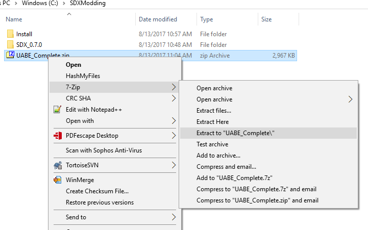

In order to follow these tutorials, the follow software should be installed.
It is recommended that you create a new folder in order to group all the tools together, for example:
C:\SDXModding\
or
D:\SDXModding\
Listed download below are the individual download links and installable packages you will need. However, we have created an easily downloadable link that includes them all. If you would prefer, you may download it here (Zip file) or through Github Desktop here.
GitHub Desktop is an easy to use tool to manage code. You can download it here.
Download and install Unity 5.3.8 here. Unity 5.3.8 will allow you to create custom Unity3D bundles, which will be used by SDX to add prefabs, and new blocks.
Download and install 7-Zip, or any other zip tool you may prefer, available here
SDX is used to compile the individual SDX scripts into Mods.dll, add hooks into the Assembly-CSharp.dll.
Download SDX 0.7.0 from here or here (mirror)
Copy the SDX.0.7.0.zip to your Modding Folder ( C:\SDXModding\ )
Right click on SDX.0.7.0.zip, and choose to extract to SDX 0.7.0.

UABE can extract existing unity assets from the game, allow changes, then re-add them.
Download UABE tool from here or here ( mirror ).
Note: The mirror link is all of the UABE combined into a merged zip file.
In this thread, find the following and download:
2.0 (32bit : here or here, 64bit : here or here)
7dtd UMAMesh plugin for 2.0 (here or here)
2.0b bugfix, download 2.0 first (32/64bit : here or here)
New type package with 5.6.0f3 : here or here
Alternatively, you can download from the mirrored link, with the UABE_Complete.zip.
Copy the UABE_Complete.zip to your Modding Folder ( C:\SDXModding\ )
Right click on UABE_Complete.zip and choose to extract to UABE_Complete

Created with the Personal Edition of HelpNDoc: Easy to use tool to create HTML Help files and Help web sites